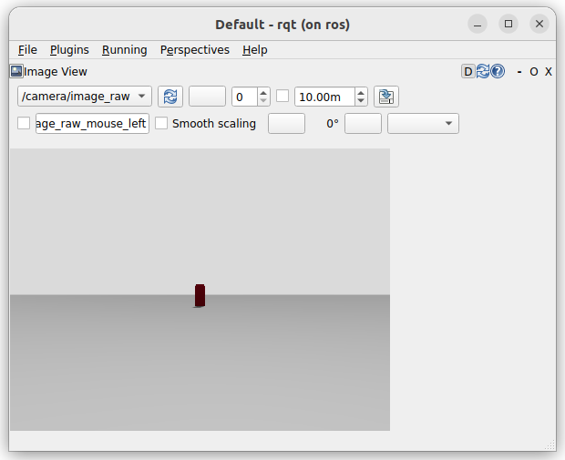

Camera
Bridge rgb camera between gazebo to ros
Gazebo
Add sensor plugin to world
| add sensor plugin to world |
|---|
| <plugin
filename="gz-sim-sensors-system"
name="gz::sim::systems::Sensors">
<render_engine>ogre2</render_engine>
</plugin>
|
| RGB Camera |
|---|
| <sensor name="camera" type="camera">
<pose> 0 0 0 0 0 0 </pose>
<visualize>true</visualize>
<update_rate>10</update_rate>
<camera>
<camera_info_topic>camera/camera_info</camera_info_topic>
<horizontal_fov>1.089</horizontal_fov>
<image>
<format>R8G8B8</format>
<width>640</width>
<height>480</height>
</image>
<clip>
<near>0.05</near>
<far>8.0</far>
</clip>
</camera>
<topic>camera/image_raw</topic>
<gz_frame_id>camera_link_optical</gz_frame_id>
</sensor>
|
urdf
Don't forget to shroud with <gazebo reference="link name"> tag
download world
ROS2
check ros gz sim demo
ros_gz_bridge
| ros2 run ros_gz_bridge parameter_bridge /camera/image_raw@sensor_msgs/msg/Image@gz.msgs.Image
|
Using launch file
- load bridge config from yaml file
- control topic qos
| ros_gz_bridge launch file |
|---|
| import os
from ament_index_python.packages import get_package_share_directory
from launch import LaunchDescription
from ros_gz_bridge.actions import RosGzBridge
PACKAGE_NAME = 'tutorial_bringup'
def generate_launch_description():
ld = LaunchDescription()
bridge_params = os.path.join(get_package_share_directory(PACKAGE_NAME),'config','gz_bridge.yaml')
bridge = RosGzBridge(
bridge_name="bridge",
config_file=bridge_params,
)
ld.add_action(bridge)
return ld
|
| gz_bridge.yaml |
|---|
| - ros_topic_name: "/camera/image_raw"
gz_topic_name: "/camera/image_raw"
ros_type_name: "sensor_msgs/msg/Image"
gz_type_name: "gz.msgs.Image"
direction: GZ_TO_ROS
|
ros_gz_image
use image_transport
| image transport bridge |
|---|
| sudo apt install ros-jazzy-ros-gz-image
|
| ros2 run ros_gz_image image_bridge /camera/image_raw
|
rqt
| ros2 run rqt_image_view rqt_image_view /camera/image_raw
|
